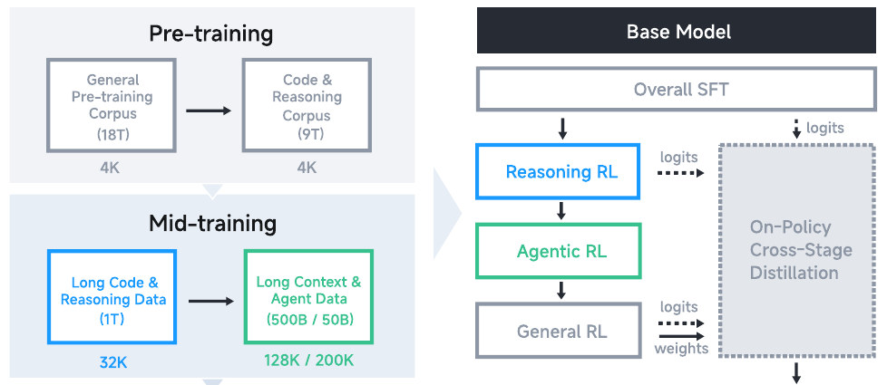
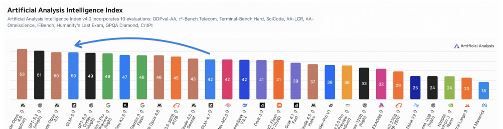
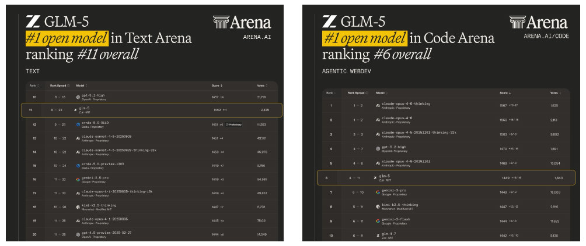
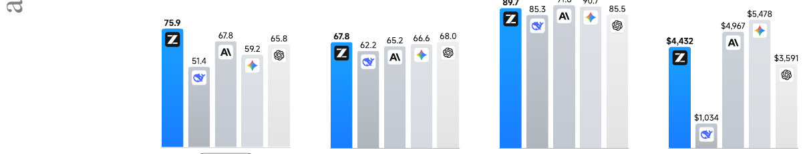

速览
五条要点
规模翻倍，注意力换成 DSA，适配只花了 20B token
256 专家、层数减到 80，总参从 355B 到 744B§2.1。DSA 从 mid-training 结束的基座续训：1000 步 warm-up，再 20B token 稀疏适配，约为 DeepSeek-V3.2 的 2%推算；128K 长文 MLA / DSA 基本持平表 3。
后训练：三段串行 RL，再用 on-policy 蒸馏防遗忘
SFT → Reasoning RL → Agentic RL → General RL，最后一步用前面各阶段的 checkpoint 当老师，按「老师 / 学生 log 比」作优势做 on-policy 蒸馏（group 1、batch 1024）§3.5 · 式 2。
Agent RL 的稳定性靠一组「工程化去噪」
训推分离的完全异步框架；TITO 网关避免重新分词；用 rollout log-prob 直接当行为策略、双边裁剪外整 token 屏蔽；丢掉过旧版本与环境崩溃的样本§4.1.2。编排器支持 1k+ 并发 rollout§4.1.1。
开源里领先，但和 Claude Opus 4.5 还有差距
SWE-bench Verified 77.8 vs 80.9；BrowseComp（带上下文管理）75.9，表内最高；Vending-Bench 2 $4,432 vs $4,967表 7。内部 CC-Bench-V2 上前端 ISR 和链式任务（52.3 vs 61.6）仍落后表 8。
配比和规模大多没给，部分评测口径互相打架
Web / Code / Math 占比、SFT 条数、RL 步数都没给；BrowseComp 的上下文管理在 §4.2.4 与 §6.1.3 写法不一致；图 1 与表 7 的 BrowseComp 柱子对不上。见 §09。
架构：GLM-4.5 放大 + MLA/DSA + 共享参数 MTP
原文没有单独的架构总图，图 5 是整条训练管线，先放这里作总览；架构改动按 §2.1 与表 10 列。

| 改动 | 做法 | 原文给的证据 |
|---|---|---|
| 放大 + 减层 | 专家 160 → 256，减层以降低专家并行通信；总参 355B → 744B，激活 32B → 40B§2.1 · 表 10 | 无单独消融 |
| Muon Split | 用 Muon 时，MLA（576 维 latent KV）不如 GQA-8；把上投影矩阵按头拆开各自正交化，让不同头按不同尺度更新§2.1 | 表 1：MLA 的 BBH 48.9 → 51.8、HumanEval 33.5 → 36.7，接近 GQA-8（53.3 / 38.5）；预训练中 attention logits 不需裁剪也稳定 |
| MLA-256 | 头维 192 → 256、头数减 1/3：训练计算量与参数不变，解码计算下降§2.1 | 表 1：MLA-256 + Muon Split 与 MLA + Muon Split 相当 |
| MTP 共享参数 | 训练时 3 个 MTP 层共享参数，draft 模型显存与 DeepSeek-V3 的单层 MTP 相同§2.1 | 表 2：同为 4 步推测解码，接受长度 2.76 vs DeepSeek-V3.2 2.55（私有 prompt 集） |
| DSA | dense warm-up 1000 步（每步 14 条 × 202,752 token，最大 LR 5e-3）+ 稀疏适配 20B token§2.1.1 | 表 3：MLA / DSA 在 MQ-NIAH 100.0 / 100.0、MV-NIAH 95.5 / 97.0、SQuAD 79.7 / 86.0、HotpotQA 66.3 / 63.0（均 128K）；SFT loss 持平（图 6） |
表 10 全量对照：GLM-4.5 vs GLM-5 展开
| 项 | GLM-4.5 | GLM-5 |
|---|---|---|
| # Total / Activated | 355B / 32B | 744B / 40B |
| # Dense / MoE / MTP Layers | 3 / 89 / 1 | 3 / 75 / 1 |
| Hidden Dim | 5120 | 6144 |
| Dense / MoE Intermediate Dim | 12288 / 1536 | 12288 / 2048 |
| QK / V Head Dim | 128 / 128 | 192 / 256 |
| Q / KV LoRA Dim | – / – | 2048 / 512 |
| # Attention Heads / KV Heads | 96 / 8 | 64 / – |
| # Indexer Attn Heads / Head Dim | – / – | 32 / 128 |
| # Experts / Routed / Shared | 160 / 8 / 1 | 256 / 8 / 1 |
| Vocabulary Size | 151552 | 154880 |
参数计数含 MTP 层，不含词嵌入与输出层表 10 注。
高效注意力消融（GLM-9B / GLM-4.7-Flash）：为什么选 DSA 表 4–6
在 40 层的 GLM-9B（GQA，已调到 128K）上，以 1:1 的全注意力 / 高效层比例，各自续训 190B token（64K）§2.1.2。提出了两个改进：beam search 找 SWA 层位置（只在 16K、RULER 上搜，beam 8、每步 2 层、约 10 步收敛），以及去掉 Conv1d 与门控、直接复用 QKV 权重的 SimpleGDN。
| 方法（表 5） | RULER 64K / 128K | MRCR 64K / 128K | HELMET-ICL 64K / 128K | RepoQA 64K / 128K |
|---|---|---|---|---|
| GLM-9B（全注意力） | 85.35 / 75.28 | 36.53 / 35.39 | 77.68 / 77.36 | 69.00 / 65.83 |
| SWA Interleave | 65.94 / 44.93 | 30.03 / 28.83 | 75.96 / 63.52 | 50.33 / 39.33 |
| SWA Pattern（搜索） | 83.72 / 69.59 | 35.02 / 33.58 | 76.48 / 74.60 | 62.33 / 51.17 |
| GDN | 76.76 / 64.00 | 31.72 / 30.22 | 76.88 / 74.84 | 65.50 / 56.17 |
| SimpleGDN | 81.76 / 67.03 | 33.03 / 31.27 | 79.80 / 81.84 | 65.50 / 58.50 |
| RULER（表 6） | 4K | 8K | 16K | 32K | 64K | 128K |
|---|---|---|---|---|---|---|
| GLM-4.7-Flash | 97.44 | 96.72 | 95.83 | 92.96 | 85.34 | 79.21 |
| + DSA warmup（只训 indexer） | 97.51 | 96.54 | 95.40 | 90.09 | 84.05 | 71.35 |
| + DSA（联合训练 150B） | 96.77 | 96.25 | 96.69 | 93.45 | 87.06 | 78.86 |
作者结论：SWA / GDN 类方法在续训适配中有不可避免的信息损失（RULER@128K 最多差 5.69、RepoQA@128K 差 7.33），DSA「按构造无损」§2.1.2。注意 DSA 实验换了模型（GLM-4.7-Flash）和预算（150B），不是与表 5 同条件对照。
数据：预训练过滤、长上下文、Agent 环境合成
原文给了阶段级总量和若干子集规模，没有给任何来源配比，所以本节只用「已披露规模」表，不画占比条。
4.1 已披露规模
| 数据 | 已披露规模 | 上下文 | 出处 |
|---|---|---|---|
| 预训练 / mid-training（基座合计 28.5T） | |||
| 通用预训练语料 | 18T token | 4K | 图 5 |
| 代码与推理语料 | 9T token（与上合计 27T） | 4K | 图 5 · §1 |
| 长代码与推理数据 | 1T token | 32K | §2.3 · 图 5 |
| 长上下文与 Agent 数据 | 500B / 50B token | 128K / 200K | §2.3 · 图 5 |
| 其中 issue–PR 数据 | 约 1,000 万 issue–PR 对，过滤后约 160B unique token | — | §2.3 |
| 代码语料增量 | 模糊去重后 unique token 比 GLM-4.5 多 28% | — | §2.2 |
| Web / Math & Science 量与占比 | 原文未披露 | — | — |
| DSA 续训 | warm-up 1000 步 × 14 条 × 202,752 ≈ 2.84B token推算；稀疏适配 20B | 202,752 | §2.1.1 |
| 后训练 | |||
| SFT | 三大类（通用对话 / 推理 / 代码与 Agent），条数 原文未披露 | 202,752 | §3.1 |
| Reasoning RL | 数学 / 科学 / 代码 / TIR 四域，「大致均衡」，条数 原文未披露 | — | §3.2 |
| SWE 环境 | 10K+ 可验证环境，数千仓库，9 种语言 | — | §4.2.1 |
| Terminal 环境 | 「数千」个，Docker 构建成功率 > 90% | — | §4.2.2 |
| 搜索 Web 知识图谱 | 200 万+ 高信息量网页 | — | §4.2.3 |
18T + 9T + 1T + 0.5T + 0.05T = 28.55T，与正文「28.5T」一致（四舍五入）推算。
4.2 预训练数据：三条过滤线
4.3 Mid-training：SWE 与长上下文
软件工程数据 §2.3
- 保留「仓库级代码 + commit diff + issue + PR + 相关文件」拼成一条序列的范式。
- 放宽仓库级过滤、收紧单个 issue 级质量过滤：约 1,000 万 issue–PR 对。
- 每个 issue–PR 检索更多相关文件；过滤后约 160B unique token。
长上下文数据 §2.3
- 自然数据：书、论文、通用语料长文，多阶段过滤（PPL、去重、长度），上采样知识密集领域。
- 合成数据：参考 NextLong / EntropyLong，把高度相似文本交错打包，缓解 lost-in-the-middle。
- 200K 阶段加入「少量」MRCR 类多轮召回数据（比例 原文未披露）。
- 后期上采样长文档与合成 Agent 轨迹；作者观察到加 200K 阶段后，128K 内表现也更好。
4.4 SFT 数据与标注
| 类别 | 构造 / 过滤 | 出处 |
|---|---|---|
| General Chat | 问答、写作、角色扮演、翻译、多轮、长上下文；回复风格比 GLM-4.5 更「有逻辑、更简洁」。角色扮演按指令遵循、语言表现力、创造性、逻辑连贯、长对话一致性五个维度，自动 + 人工双重过滤 | §3.1 |
| Reasoning | 逻辑推理：构造可验证题 + 拒绝采样；数学科学：只留 GLM-4.7 觉得难的题 | §3.1 |
| Coding & Agent | 大量执行环境里采轨迹，偏真实场景与长程任务；用专家 RL + 拒绝采样提纯。轨迹里出错的片段保留但在 loss 里 mask 掉，学纠错而不强化错误动作 | §3.1 |
| 思考模式 | 新 chat template 支持 Interleaved（每次回复 / 调工具前都思考）、Preserved（编码 Agent 多轮保留全部思考块）、Turn-level（逐轮开关思考）三种 | §3.1 · 图 7 |
4.5 RL 与 Agent 环境数据
Reasoning RL 题源 §3.2
- 数学 / 科学：开源数据 + 与外部标注商共建；难度过滤：GLM-4.7 很少做对或全错、但更强老师（GPT-5.2 xhigh、Gemini 3 Pro Preview）能解。
- 代码：竞赛题（Codeforces、TACO、SYNTHETIC-2-RL）+ 科学编程题（把内部题拆成最小代码实现）。
- TIR：复用较难的数理子集 + 与标注商共建「必须用外部工具」的 STEM 题。
- 按领域 / 来源配专门判官，给二元结果奖励。
SWE 环境 §4.2.1
- 真实 issue–PR 对，规则 + LLM 过滤；按 bug 修复 / 新功能 / 重构 / 其他分类，并补齐使实现与测试补丁一致的需求说明。
- 基于 RepoLaunch 自动分析安装依赖、建环境、生成测试命令；LLM 生成按语言的日志解析函数，抽出 Fail-to-Pass 与 Pass-to-Pass 测试。
- 10K+ 环境，Python / Java / Go / C / CPP / JS / TS / PHP / Ruby。
Terminal 环境 §4.2.2
- 从种子任务合成：LLM 头脑风暴任务草稿 → 构造 Agent 实例化为 Harbor 格式（描述 + Docker 环境 + 测试脚本）→ refine Agent 按人工 rubric 迭代修（能构建、测试与描述一致、防捷径）。Docker 构建成功率 > 90%。
- 从网页语料合成：质量分类器筛代码网页 → 选适合做终端任务的 → 按主题 × 难度分层采样 → 编码 Agent 写任务并自己跑 Harbor 校验脚本，失败就自修，只收自验证通过的。
搜索任务 §4.2.3
- 从早期搜索 Agent 轨迹收集 URL，去重后留 200 万+ 网页，LLM 做实体识别与结构化抽取，建 Web 知识图谱并持续纠错。
- 采低到中频实体作种子扩多跳子图，转成隐含多实体关系链的问题。
- 三级过滤：① 无工具推理模型 8 次里答对 ≥1 次就删；② 早期 Agent 几步能解就删；③ 验证 Agent 双向核验，答案不唯一、证据不一致、标签错误的都拒。
幻灯片生成环境（HTML 渲染 + 布局校验）§4.2.5
SFT 起步 → RL（三级奖励）→ 拒绝采样微调 + mask 微调，迭代自我提升。奖励分三级：L1 静态标记属性（位置、间距、颜色、字体、饱和度等的规则，外加幻觉图 / 重复图检测）；L2 运行时渲染属性（DOM 宽高、bbox 等，由分布式渲染服务提取）；L3 视觉感知特征（如异常留白）。拒绝采样阶段把 RL 奖励函数直接变成数据过滤器（页面级：代码有效可编译；轨迹级：工具执行正确、内容多样），Best-of-N 留最好的；只有少数页有缺陷的轨迹，mask 掉坏页、保留其余，不整条丢。
效果：严格 16:9 的页面比例 40% → 92%；人评对 GLM-4.5 胜率内容 60%、布局 57.5%、美观 65%、总体 67.5%§4.2.5。
overflow: hidden 把溢出内容藏起来；右（绿框，Hacked）：渲染尺寸变成合规的 1280×720，几何指标「达标」但内容被截掉。原图下半部分的第二类作弊（硬塞间距，1280×493 → 1280×720）未包含在本页裁图中。作者的对策是改渲染器、取真实运行时属性。来源：论文图 9（上半）训练配方
通用预训练
- 数据
- 18T
- 上下文
- 4K
LR 0 → 2e-4 warm-up，再衰减到 4e-5（预训练结束）附录 A
代码与推理
- 数据
- 9T
- 上下文
- 4K
早期即侧重代码与推理§1 · 图 5
Mid-training
- 32K
- 1T
- 128K
- 500B
- 200K
- 50B
LR 4e-5 → 1e-5 线性附录 A
DSA 续训
- warm-up
- 1000 步
- 适配
- 20B
warm-up LR 5e-3 → 2e-4；适配恒定 1e-5附录 A
优化器沿用 GLM-4.5：Muon、cosine decay、batch size warm-up；其余超参「同 GLM-4.5」，本文未列附录 A。SFT 阶段做 INT4 QAT，训练与离线量化共用一个 kernel，保证训推逐位一致§2.4.3。
多任务 SFT
- 最长 202,752 token
- 三种思考模式
- 错误片段保留但 mask
- INT4 QAT
三段串行 RL
- Reasoning：GRPO + IcePop（去掉 KL），β=2、εlow=0.2、εhigh=0.28，group 32、batch 32，完全 on-policy§3.2
- Agentic：异步、训推解耦，coding + search 环境§3.3 · §4.1
- General：正确性 / 情商 / 任务质量三维目标，规则 + ORM + GRM 混合奖励，加入人类专家回复作风格锚点§3.4
On-Policy 跨阶段蒸馏
- 前序各阶段最终 checkpoint 当老师，prompt 从各老师的 RL 训练集按「适当比例」混采（比例 原文未披露）
- 把式 1 的优势换成 sg[log πteacherinfer − log πθtrain]
- group size 1、batch 1024§3.5
5.1 Reasoning RL 的两个 DSA 细节
- indexer 的 top-k 是 RL 稳定性的关键。类比 MoE 的 routing replay，但 k = 2048 远大于 MoE 的 k，逐 token 存 indexer 索引不现实§3.2。
- 换成确定性 torch.topk。SGLang DSA indexer 的非确定性 CUDA top-k，以及 CUDA / TileLang 实现，在 RL 几步后就性能骤降、熵骤降；朴素 torch.topk 稍慢但确定，「带来可观 RL 收益」。RL 期间 indexer 参数默认冻结§3.2。原文没给对比曲线或数字。
5.2 Agentic RL：异步下的稳定性
完全异步 + 多任务编排 §4.1.1
- 训练引擎和推理引擎放在不同 GPU；推理持续出轨迹，攒够阈值就送去训练；每 K 次梯度更新把权重推回推理端（K 原文未披露），并每次推权重后重置优化器。
- Multi-Task Rollout Orchestrator：每个任务的 rollout 与奖励逻辑是独立微服务，统一成 message-list 轨迹；控制各任务采样比例与速度，1k+ 并发 rollout。
- 目标：组内奖励减均值，只对模型生成的 token 计 loss，环境反馈不计§4.1。
四个去噪 / 校正手段 §4.1.2
- TITO 网关：训练直接用推理引擎吐出的 token ID 与元数据，不把文本重新分词。
- Direct double-sided IS：rt = exp(log πθ − log πrollout)，不再维护 πold；r 落在 (1−εℓ, 1+εh) 外的 token 整个屏蔽（ε 取值 原文未披露）。
- 丢陈旧样本：记录每条轨迹用到的权重版本，当前版本 − 最旧版本 > τ 就丢（τ 原文未披露）。
- 丢环境崩溃样本：记录失败原因，剔除环境原因失败的；组内有效样本过半就重复有效样本补齐，否则整组丢。
另有 DP-aware routing：同一 rollout 的请求一致性哈希到固定 DP rank，保住 KV cache 前缀复用，再配轻量负载再平衡§4.1.2。
基础设施细节：显存、并行、slime rollout 优化 §2.4 · §3.6
- 显存：MTP 输出层与主输出层放同一 stage 共享参数、其余部分前移；流水线内 ZeRO2 式梯度分片 + 双缓冲；Muon 分布式优化器只 all-gather 自己的参数分片；流水线 warm-up 期激活按层卸载到主机内存；输出投影与 CE loss 按序列分块计算§2.4.1。
- 并行：延迟部分权重梯度计算以减 bubble；长序列按负载重排序、动态重分注意力计算、DP rank 灵活划成不同大小的 CP 组，分层 all-to-all 叠加节点内外通信§2.4.2。
- slime：可自定义 rollout + HTTP 服务化 rollout；多节点推理（例：8 节点 EP64 + DP64）配 DP-attention；FP8 rollout + MTP 压长尾；Prefill-Decode 分离；心跳容错自动摘除坏节点§3.6。
- 昇腾部署：Attention / MLP 用 W8A8，MoE 专家 W4A8，QuaRot + Flex_AWQ_SSZ，单台 Atlas 800T A3 装下；Lightning Indexer、Sparse Flash Attention、MLAPO（把 13 个小算子融成一个）三个融合 kernel；称单个国产节点可比「双 GPU 国际集群」、长序列部署成本降 50%§5。
5.3 已披露 / 未披露超参
| 阶段 | 已披露 | 未披露 |
|---|---|---|
| 预训练 / mid | LR 0→2e-4→4e-5；mid 4e-5→1e-5 线性；Muon + cosine + batch warm-up附录 A | batch size、总步数、各来源配比 |
| DSA | warm-up 1000 步、14 × 202,752、LR 5e-3→2e-4；适配 20B、LR 1e-5；indexer top-k 2048§2.1.1 · §3.2 · 附录 A | — |
| Reasoning RL | β=2、εlow=0.2、εhigh=0.28、group 32、batch 32§3.2 | 步数、LR、样本量 |
| Agentic RL | — | K、τ、εℓ / εh、阈值、步数 |
| OPD | group 1、batch 1024§3.5 | 各老师 prompt 比例 |
| 搜索推理 | keep-recent k = 5；HCM 阈值 T = 32k§4.2.4 | — |
评测
对比对象：GLM-4.7、DeepSeek-V3.2、Kimi K2.5（开源）与 Claude Opus 4.5、Gemini 3 Pro、GPT-5.2 (xhigh)（闭源）§6.1。
6.1 主表（表 7 精选）
| 基准 | GLM-5 | GLM-4.7 | DeepSeek-V3.2 | Kimi K2.5 | Claude Opus 4.5 | Gemini 3 Pro | GPT-5.2 (xhigh) |
|---|---|---|---|---|---|---|---|
| HLE (w/ Tools) | 50.4 | 42.8 | 40.8 | 51.8 | 43.4* | 45.8* | 45.5* |
| SWE-bench Verified | 77.8 | 73.8 | 73.1 | 76.8 | 80.9 | 76.2 | 80.0 |
| SWE-bench Multilingual | 73.3 | 66.7 | 70.2 | 73.0 | 77.5 | 65.0 | 72.0 |
| Terminal-Bench 2.0 (Terminus-2) | 56.2 / 60.7† | 41.0 | 39.3 | 50.8 | 59.3 | 54.2 | 54.0 |
| CyberGym | 43.2 | 23.5 | 17.3 | 41.3 | 50.6 | 39.9 | - |
| BrowseComp (w/ Context Manage) | 75.9 | 67.5 | 67.6 | 74.9 | 57.8 | 59.2 | 65.8 |
| τ²-Bench | 89.7 | 87.4 | 85.3 | 80.2 | 91.6 | 90.7 | 85.5 |
| MCP-Atlas (Public Set) | 67.8 | 52.0 | 62.2 | 63.8 | 65.2 | 66.6 | 68.0 |
| Tool-Decathlon | 39.2 | 23.8 | 35.2 | 27.8 | 43.5 | 36.4 | 46.3 |
| Vending-Bench 2 | $4,432 | $2,377 | $1,034 | $1,198 | $4,967 | $5,478 | $3,591 |
| GDPval-AA Elo | 1,409 | 1,198 | 1,195 | 1,288 | 1,400 | 1,201 | 1,462 |
* HLE 全集结果（GLM-5 等其余列为纯文本子集，判官 GPT-5.2 medium）。† 在修正了歧义指令的 Terminal-Bench 2.0 verified 版上测，仅 GLM-5 有此值；本页标最高时用非 † 的 56.2。GDPval-AA Elo 为 2026-02-15 记录。Vending-Bench 2 由 Andon Labs 独立跑表 7 · 附录 B.2。
表 7 全量（22 行） 展开
| 基准 | GLM-5 | GLM-4.7 | DeepSeek-V3.2 | Kimi K2.5 | Claude Opus 4.5 | Gemini 3 Pro | GPT-5.2 (xhigh) |
|---|---|---|---|---|---|---|---|
| Reasoning & General | |||||||
| HLE | 30.5 | 24.8 | 25.1 | 31.5 | 28.4 | 37.2 | 35.4 |
| HLE (w/ Tools) | 50.4 | 42.8 | 40.8 | 51.8 | 43.4* | 45.8* | 45.5* |
| AIME 2026 I | 92.7 | 92.9 | 92.7 | 92.5 | 93.3 | 90.6 | - |
| HMMT Feb. 2025 | 97.9 | 97.1 | 92.5 | 95.4 | 92.9 | 97.3 | 99.4 |
| HMMT Nov. 2025 | 96.9 | 93.5 | 90.2 | 91.1 | 91.7 | 93.0 | 97.1 |
| IMO-AnswerBench | 82.5 | 82.0 | 78.3 | 81.8 | 78.5 | 83.3 | 86.3 |
| GPQA-Diamond | 86.0 | 85.7 | 82.4 | 87.6 | 87.0 | 91.9 | 92.4 |
| LongBench v2 | 64.5 | 59.1 | 59.8 | 61.0 | 64.4 | 68.2 | 59.8 |
| Coding | |||||||
| SWE-bench Verified | 77.8 | 73.8 | 73.1 | 76.8 | 80.9 | 76.2 | 80.0 |
| SWE-bench Multilingual | 73.3 | 66.7 | 70.2 | 73.0 | 77.5 | 65.0 | 72.0 |
| Terminal-Bench 2.0 (Terminus-2) | 56.2 / 60.7† | 41.0 | 39.3 | 50.8 | 59.3 | 54.2 | 54.0 |
| Terminal-Bench 2.0 (Claude Code) | 56.2 / 61.1† | 32.8 | 46.4 | - | 57.9 | - | - |
| CyberGym | 43.2 | 23.5 | 17.3 | 41.3 | 50.6 | 39.9 | - |
| Agentic | |||||||
| BrowseComp | 62.0 | 52.0 | 51.4 | 60.6 | 37.0 | 37.8 | - |
| BrowseComp (w/ Context Manage) | 75.9 | 67.5 | 67.6 | 74.9 | 57.8 | 59.2 | 65.8 |
| BrowseComp-ZH | 72.7 | 66.6 | 65.0 | 62.3 | 62.4 | 66.8 | 76.1 |
| τ²-Bench | 89.7 | 87.4 | 85.3 | 80.2 | 91.6 | 90.7 | 85.5 |
| MCP-Atlas (Public Set) | 67.8 | 52.0 | 62.2 | 63.8 | 65.2 | 66.6 | 68.0 |
| Tool-Decathlon | 39.2 | 23.8 | 35.2 | 27.8 | 43.5 | 36.4 | 46.3 |
| Vending-Bench 2 | $4,432 | $2,377 | $1,034 | $1,198 | $4,967 | $5,478 | $3,591 |
| GDPval-AA Elo | 1,409 | 1,198 | 1,195 | 1,288 | 1,400 | 1,201 | 1,462 |
评测设置与口径改动 附录 B.2 · B.3
- 推理类：temperature 1.0、top_p 0.95、最长生成 131,072；HLE-with-tools 上下文 202,752。
- SWE-bench：OpenHands + 为 GLM-5 定制的指令 prompt；temperature 0.7、max_new_tokens 16,384、200K 窗口。
- Terminal-Bench 2.0：Terminus-2 超时 2h、16 CPU / 32GB；Claude Code 2.1.14 去掉墙钟限制，5 次平均。
- CyberGym：Claude Code 2.1.18，无 web 工具，单次 Pass@1，1,507 题。
- MCP-Atlas：所有模型在 500 题公开集上重测，超时 4 → 10 分钟，判官 Gemini 3 Pro。
- τ²-Bench：Retail / Telecom 改了用户模拟器 prompt（防提前结束，全文见图 12–13），Airline 用 Claude Opus 4.5 system card 的领域修正。
- BrowseComp：判官统一用官方 prompt + o3-mini（作者称开源判官有系统偏差）§4.2.4。



6.2 内部 CC-Bench-V2（表 8）
全自动、不用人工标注：前端先构建再由 Agent-as-a-Judge（Claude Code + Claude Sonnet 4.5 + Playwright MCP）逐个 check-item 点 UI 判；后端 85 题、6 种语言、每题 5–10 个人写单测，全过才算；长程包括大仓库找文件和由合并 PR 挖出的链式任务§6.2。
| 类别 · 任务 | 指标 | GLM-5 | GLM-4.7 | Claude Opus 4.5 |
|---|---|---|---|---|
| Frontend | ||||
| HTML | ISR / CSR | 38.9 / 76.3 | 35.4 / 64.9 | 52.2 / 82.2 |
| React | ISR / CSR | 34.6 / 71.0 | 17.2 / 49.4 | 39.7 / 70.7 |
| Vue | ISR / CSR | 32.7 / 77.1 | 24.5 / 53.8 | 46.9 / 74.3 |
| Build（BSR） | ||||
| React / Vue / Svelte / Next.js | BSR | 100 / 100 / 100 / 95.0 | 65.0 / 70.0 / 60.0 / 70.0 | 95.0 / 100 / 90.0 / 80.0 |
| Backend & Long-horizon | ||||
| Backend Engineering | Pass@1 | 25.8 | 19.6 | 26.9 |
| Repo Exploration | Pass@1 | 65.6 | 47.8 | 64.5 |
| Chained Tasks | Pass@1 | 52.3 | 43.0 | 61.6 |
BSR 构建成功率；ISR 整个任务全部规格通过的比例；CSR 逐 check-item 通过率。作者解读：GLM-5 能满足大部分单条需求（CSR 接近或超过 Opus 4.5），但端到端做完整任务（ISR）在三个技术栈都落后§6.2.1。判官可信度：130 个 check-item 上与人类专家逐条一致 94%；8 个模型的排名与人工 Spearman 85.7%§6.2.1。
6.3 其他
SWE-rebench（2026 年 1 月，表 9）反向信号
GLM-5 Resolved 42.1%（±1.21），低于 Claude Opus 4.5 43.8%、Gemini 3 Pro 46.7%、GPT-5.2 (xhigh) 51.7%、Claude Opus 4.6 52.9%；略高于 GLM-4.7 41.3%、Kimi K2.5 37.9%。Pass@5 50.0%，低于 GLM-4.7 的 56.3%表 9。作者只写「能有效泛化到新问题」。
BrowseComp 上下文管理 §4.2.4 · 图 8
超过约 100k token 后准确率明显下降。keep-recent-k（k=5，只折叠更早的工具结果）让 GLM-5 从 55.3% 到 62.0%；再与 Discard-all 组合成分层上下文管理（超过 T=32k 清空工具历史重来），最终 75.9。
基座模型（表 11）
GLM-5-Base 对 GLM-4.5-Base：MMLU 88.3 vs 86.1、SimpleQA 36.0 vs 30.0、EvalPlus 87.0 vs 78.1、LiveCodeBench-Base 34.4 vs 28.1；但 GSM8K 68.8 vs 79.4、MATH 56.4 vs 61.0 更低表 11。
真实场景通用能力（图 11）
翻译、多语对话、指令遵循、世界知识、工具调用五域只与 GLM-4.7 对比。内部集规模：ZMultiTransBench 1,220 条（7 个中→外语对）、MENT-SNS 753 对、ZMultiDialBench 141 条、IF-Badcase 450 条、ToolCall-Badcase 200 条§6.3。
表 11：基座模型对比全量 展开
| Benchmark | DeepSeek-V3 Base | Kimi-K2 Base | GLM-4.5 Base | GLM-5 Base |
|---|---|---|---|---|
| # Activated / Total | 37B / 671B | 32B / 1043B | 32B / 355B | 40B / 744B |
| English | ||||
| SimpleQA (EM) | 26.6 | 35.3 | 30.0 | 36.0 |
| BBH (EM) | 88.4 | 88.7 | 86.2 | 87.4 |
| MMLU (EM) | 87.2 | 87.8 | 86.1 | 88.3 |
| HellaSwag (EM) | 88.9 | 94.6 | 87.1 | 88.1 |
| PIQA (EM) | 84.7 | - | 85.3 | 84.6 |
| TriviaQA (EM) | 82.9 | 85.1 | 80.0 | 80.9 |
| Code | ||||
| EvalPlus (Pass@1) | 65.6 | 80.3 | 78.1 | 87.0 |
| LiveCodeBench-Base (Pass@1) | 24.6 | 26.3 | 28.1 | 34.4 |
| Math | ||||
| GSM8K (EM) | 87.6 | 92.1 | 79.4 | 68.8 |
| MATH (EM) | 62.6 | 70.2 | 61.0 | 56.4 |
| Chinese | ||||
| CLUEWSC (EM) | 82.7 | - | 83.5 | 84.2 |
| C-Eval (EM) | 90.1 | 92.5 | 86.9 | 88.8 |
| C3 (EM) | 78.6 | - | 83.1 | 80.3 |
| Chinese-SimpleQA (EM) | 72.1 | 77.6 | 70.1 | 74.6 |
新在哪
DSA、GRPO、IcePop、slime、on-policy 蒸馏都是已有工作；下面只列本文自己提出、且给了可核对证据或明确做法的点。
Muon Split：让 MLA 在 Muon 下追上 GQA
把 Q/K/V 上投影按头拆开分别正交化，并配合 MLA-256（头维加大、头数减 1/3）降低解码计算§2.1。
用 20B token 把 dense 基座改成 DSA，并在 RL 里换确定性 top-k
续训预算约为 DeepSeek-V3.2 的 2%推算；RL 期间用 torch.topk、冻结 indexer，解决 indexer 选择的训推不一致§2.1.1 · §3.2。
MTP 三层共享参数
训练时用 3 个共享参数的 MTP 层预测更远的 token，draft 显存不变，缓解 DeepSeek-V3 单层 MTP 的训推不一致§2.1。
异步 Agent RL 的「去 πold」双边 token 屏蔽 + 样本级去噪
直接用 rollout log-prob 当行为策略、超出信任域的 token 整个 mask；配合 TITO、版本陈旧阈值、环境崩溃剔除与组补齐规则§4.1.2。
串行 RL 末尾的跨阶段 on-policy 蒸馏
以老师 / 学生 log 比替换 GRPO 优势，group 1、batch 1024，一次性把 SFT、Reasoning RL、General RL 的能力拉回来§3.5 · 式 2。
对图像编辑数据 / 评测 / caption 的启示
这是纯文本 LLM 报告，没有图像 caption。但它的数据过滤、环境合成、幻灯片渲染奖励和 Agent-as-a-Judge，与编辑数据构建、验收和评测协议是同一类问题。每条先写论文怎么做，再给一条迁移建议（不是论文内容）。
D1从「中低质量」池子里专门捞长尾
论文：World Knowledge 分类器用维基条目 + LLM 标注数据优化，从中低质量网页里提炼长尾知识，而不是整批丢掉§2.2。
迁移建议，不是论文内容：美学分低被筛掉的图里常有稀有物体、少见场景、非英文文字。单独训一个「稀有概念」分类器（用百科实体图 + VLM 标注作正样本），从低分池召回这类图，进编辑源图池时打上标记，方便单独计量。
D2明确排除合成 / AI 生成 / 模板化数据
论文：数理语料的过滤管线「严格避免」合成、AI 生成或模板化数据§2.2。
迁移建议，不是论文内容：编辑数据的源图和目标图都记录来源（实拍 / 生成模型 / 渲染）。评测集源图只用实拍；训练集里生成图的占比单独统计，按来源分桶看指标，避免模型学到生成器的纹理指纹。
D3难度以「上一代模型」为锚，同时要求「更强者可解」
论文：RL 数学科学题只留 GLM-4.7 很少做对或全错、但 GPT-5.2 xhigh / Gemini 3 Pro Preview 能解的；SFT 只留 GLM-4.7 觉得难的题§3.1 · §3.2。
迁移建议，不是论文内容：编辑 RL 指令池用当前线上模型采 N 张打分，删掉「全过」的；再用最强商用编辑器跑一遍，删掉「强者也做不到」的（多半是指令本身不可执行）。两边的删除比例都写进数据版本说明。
D4把基础设施失败和模型失败分开记账
论文：记录每个样本的失败原因，剔除因沙箱崩溃失败的样本；组内有效样本过半才补齐，否则整组丢§4.1.2。
迁移建议，不是论文内容：批量生成编辑对或跑 RL rollout 时，API 超时、安全拦截、解码失败要和「编辑做错了」分成两个字段。前者不进奖励、不进拒绝统计；按 GRPO 分组时沿用「过半补齐、否则整组丢」这类明确规则。
D5全链路保存原始 token，不做文本往返
论文：TITO 网关直接记录推理引擎的 token ID，避免重新分词带来的边界、空白、截断错位§4.1.2。
迁移建议，不是论文内容：编辑数据管线同理：存生成时的原始像素（PNG / 原始 latent），不要中途转 JPEG 再读回；指令和 caption 存最终送进 text encoder 的那份字符串（含模板），避免训练时重拼模板造成的错位。
C1错的片段 mask 掉，不整条丢
论文：SFT 轨迹里的错误片段保留但不计 loss；幻灯片数据里只有少数页有缺陷的轨迹，mask 坏页、保留其余§3.1 · §4.2.5。
迁移建议，不是论文内容：多操作编辑 caption（例：换背景 + 改衣服颜色 + 去路人）若判官只判出其中一个 op 与图不符，把该 op 的文本 span 在 caption loss 或指令条件里屏蔽（或降为「未说明」），其余 op 继续用，比整条丢掉省标注成本。
C2用人类写的样本当风格锚点
论文：General RL 引入专家人工回复作风格锚点，因为纯模型优化会收敛到冗长、公式化的「模型腔」§3.4。
迁移建议，不是论文内容：VLM 写的编辑指令普遍过长、句式雷同，与真实用户指令分布不一样。保留一小批人工写的指令 / caption 作为参照集，定期比较 VLM 改写结果的长度分布和句式重复率，偏了就用人工样本做 few-shot 或 DPO 拉回。
C3LLM 打分对长文档分块再聚合
论文：数理文档用 LLM 打分，长文档用 chunk-and-aggregate 提高打分准确度§2.2。
迁移建议，不是论文内容：高分辨率图或长 caption 一次性交给 VLM 打分容易漏局部问题。把图切块（或把 caption 按 op 拆句）分别判，再用「最差块」或加权聚合得到整体分，局部伪影和 op 级不符都能被抓到。
E1奖励要读「渲染后的真实结果」，防几何作弊
论文：幻灯片 RL 中模型用 overflow: hidden 截断内容、硬塞间距去满足 16:9 指标；作者改渲染器取运行时真实属性，并加感知级信号（异常留白）§4.2.5 · 图 9。
迁移建议，不是论文内容：编辑 RL 的「保持度」奖励最容易被钻空子：几乎原样输出就能拿高分。保持度必须和「指令完成度」相乘或设门槛；完成度由看最终像素的判官给，不读模型自报的 mask 或坐标。定期人工翻高分样本找新的作弊模式。
E2每条任务一张 checklist，判官用两种一致性验收
论文：前端每题配由规格直接派生的 checklist，Agent 判官逐项交互判；用 130 条逐项一致率 94% 和 8 模型排名 Spearman 85.7% 两个口径验证判官§6.2.1。
迁移建议，不是论文内容：编辑评测按指令生成逐项检查（「杯子变红」「杯柄形状不变」「反光同步变化」），VLM 判官逐项判；上线前同时报逐项一致率和模型排名相关性——只报前者看不出排名会不会翻。
E3同时报「逐项完成率」和「整任务通过率」
论文：CSR 上 GLM-5 与 Opus 4.5 接近甚至更高，但 ISR 在三个技术栈都落后；链式任务把前序测试累计回放，抓后续步骤造成的回归表 8 · §6.2.3。
迁移建议，不是论文内容：多轮编辑评测同时报 op 级完成率和「整条指令全部满足」率；第 k 轮之后重新检查前 k−1 轮的编辑是否还在（例：第 3 轮换背景后，第 1 轮改的衣服颜色是否被改回）。
E4评测集从线上 badcase 来，且持续淘汰「太简单」的题
论文：IF-Badcase（450 条）、ToolCall-Badcase（200 条）来自生产环境用户报告的失败；前端基准迭代删除已不再区分 SOTA 的简单题，最终 220 题§6.3 · 附录 B.4.1。
迁移建议，不是论文内容：编辑评测集按季度从用户差评 / 重试日志补题，并删掉所有候选模型都满分的题；每次改动冻结版本号，旧版本分数不和新版本混比。
E5判官和协议改动要逐条公开
论文：BrowseComp 发现分数对判官 prompt / 模型敏感，统一用官方 prompt + o3-mini；τ²-Bench 改用户模拟 prompt 并全文附出；MCP-Atlas 超时 4 → 10 分钟并重测所有模型§4.2.4 · 附录 B.2–B.3。
迁移建议，不是论文内容：编辑评测报告里固定一节「口径」：判官模型与版本、判官 prompt 全文、输入分辨率、对竞品是否同流水线重跑。换判官时在两个判官下各跑一遍关键对比，报差值。
局限与存疑
- 配比与规模基本未披露。预训练只给 18T / 9T 两段总量，Web / Code / Math 各自多少、SFT 条数、各 RL 阶段样本量与步数、OPD 各老师的 prompt 比例都没有§2–§3。
- 关键方法缺消融。串行 RL 顺序、跨阶段蒸馏、TITO、double-sided IS、异步 Agent RL 都没有「有 / 无」对照；确定性 top-k 只有定性描述。可核对的消融只有表 1、表 3–6 与图 8。
- BrowseComp 的上下文管理口径前后不一。§4.2.4 说 75.9 来自 keep-recent-5 + Discard-all 的分层策略（HCM）；§6.1.3 与附录 B.2 却说「w/ Context Manage」用的是与 DeepSeek-V3.2、Kimi K2.5 相同的 discard-all；附录 B.2 还写明「无上下文管理」一行其实保留最近 5 轮，即 62.0 已含 keep-recent。
- 图 1 与表 7 对不上。图 1 BrowseComp 组里 DeepSeek-V3.2 为 51.4（对应表 7 不带上下文管理一行）、Claude Opus 4.5 为 67.8（表 7 中是 37.0 / 57.8）；另外图 1 题注列 DeepSeek-V3.2，正文引用时写的是 GLM-4.7图 1 · §1 · 表 7。
- 结构数字自相矛盾。§2.1 说层数减到 80，表 10 为 3 dense + 75 MoE = 78（另有 1 层 MTP）推算；§2.1 与表 10 为 744B，§5 写「750B」；§2.1 说 MLA-256 把头维 192 → 256，表 10 的 QK Head Dim 仍是 192、V Head Dim 为 256，没说清改的是哪一维。
- 「DSA 按构造无损」说得过满。表 3 HotpotQA-128k 从 66.3 降到 63.0；表 6 的 128K 仍差 0.35。DSA 的验证实验换了模型和预算（GLM-4.7-Flash、150B），与表 5 的 SWA / GDN（GLM-9B、190B）不是同条件对比。
- 主表可比性。HLE (w/ Tools) 闭源三家是全集（*），GLM-5 是纯文本子集；Terminal-Bench verified（†）只报了 GLM-5；τ²-Bench 改了用户模拟 prompt，MCP-Atlas 延长超时并重测——这些都影响和官方数字的直接对比。
- 正文与表格表述不一。§6.1.1 说 LongBench v2「取得最高分，仅次于 Gemini 3 Pro」，表 7 中 GLM-5 64.5 是第二；§6.2.1 说 BSR 98.0%，表 8 四项为 100 / 100 / 100 / 95.0（简单平均 98.75）推算，聚合方式未说明；表 8 有 Svelte / Next.js 的 BSR，但表 13 的技术栈只列 HTML / React / Vue。
- 内部集不可复现。CC-Bench-V2、ZMultiTransBench、ZMultiDialBench、IF-Badcase、ToolCall-Badcase 均为内部集；CC-Bench-V2 判官是 Claude Code + Sonnet 4.5，被比较的对象之一是同厂的 Opus 4.5，原文用 94% / 85.7% 一致性做了整体验证，但没有按模型报偏差。
- 新鲜题上优势消失。SWE-rebench 上 GLM-5 42.1%，低于 Claude Opus 4.5 与 Gemini 3 Pro，Pass@5 50.0% 还低于 GLM-4.7 的 56.3%表 9，与 SWE-bench Verified 上的叙事不同，原文没讨论。
- 基座数学退步未解释。GLM-5-Base 的 GSM8K 68.8、MATH 56.4，低于 GLM-4.5-Base 的 79.4 / 61.0表 11。
- 其他未量化的说法。「平均比 GLM-4.7 提升约 20%」没给计算方式§1；「新的异步 RL 基础设施」（摘要）与 §3.6「没有引入新的系统组件」措辞有张力；国产节点「可比双 GPU 国际集群」「长序列部署成本降 50%」没有实验设置§5。
图表索引
| 编号 | 内容 | 本页位置 |
|---|---|---|
| 图 1 | 8 项基准对比柱状图（figures/fig1.jpg 只含下排 4 项，p.1） | §06.1 |
| 图 2 | Artificial Analysis Intelligence Index v4.0（figures/fig2.jpg，p.2） | §06.1 |
| 图 3 | LMArena Text / Code Arena 排名（figures/fig4.jpg；manifest 标为图 4，内容实为图 3） | §06.1 |
| 图 4 | Vending-Bench 2 与 CC-Bench-V2 长程任务（未裁图，本页仅文字引用） | — |
| 图 5 | 训练管线总览（figures/fig5.jpg，p.4） | §03 |
| 图 6–8 | MLA / DSA SFT loss；三种思考模式；BrowseComp 上下文管理曲线（未裁图，文字引用） | §03 · §04.4 · §06.3 |
| 图 9 | 幻灯片 RL 奖励作弊（figures/fig9.jpg 只含上半「截断」一类，p.20） | §04.5 |
| 图 10–13 | Agent-as-a-Judge 流程；五域通用能力；τ²-Bench 用户模拟 prompt（未裁图，文字引用） | §06 |
| 表 1–3 | Muon Split / MLA-256；MTP 接受长度；MLA vs DSA 长文 | §03 |
| 表 4–6 | SWA / GDN / DSA 高效注意力消融 | §03 折叠 |
| 表 7 | 主对比表（精选 + 全量） | §06.1 |
| 表 8–9 | CC-Bench-V2；SWE-rebench | §06.2–6.3 |
| 表 10–11 | 架构超参；基座模型对比 | §03 折叠 · §06.3 折叠 |
| 表 12–13 | 前端基准场景 / 技术栈分布（220 题） | §08 E4 |
| 示意图 | 架构配置示意（本页据表 10 绘制）；三张柱状图（本页据表 7 绘制，横轴从 0 起） | §03 · §06.1 |